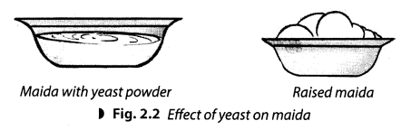
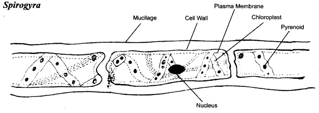
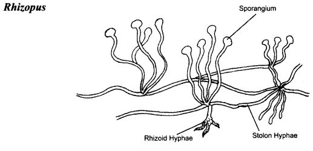
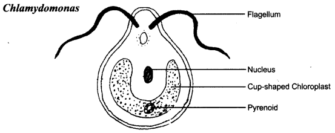
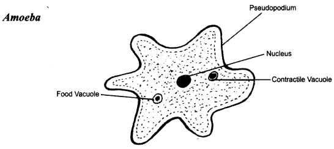
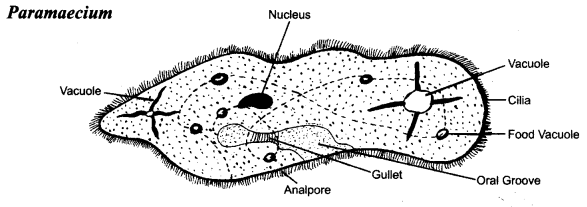
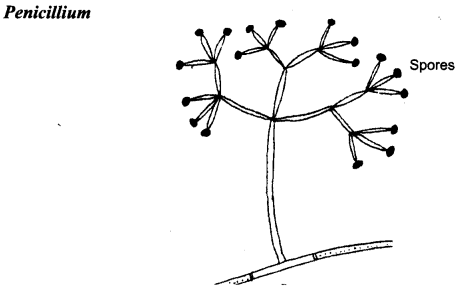
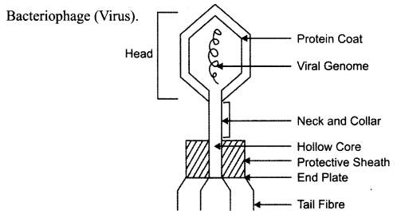
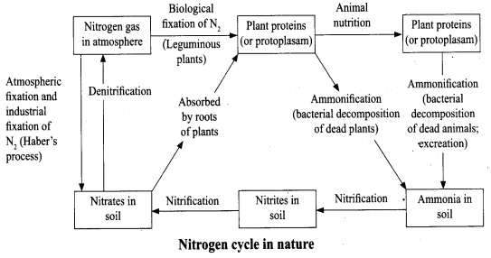

NCERT Solutions for Class 8 Science Chapter 2 Microorganisms Friend and Foe
Topics and Sub Topics in Class 8 Science Chapter 2 Microorganisms Friend and Foe:
| Section Name | Topic Name |
| 2 | Microorganisms Friend and Foe |
| 2.1 | Microorganisms |
| 2.2 | Where do Microorganisms Live? |
| 2.3 | Microorganisms and Us |
| 2.4 | Harmful Microorganisms |
| 2.5 | Food Preservation |
| 2.6 | Nitrogen Fixation |
| 2.7 | Nitrogen cycle |
Microorganisms: Friend and Foe Class 8 Science NCERT Textbook Questions
Question 1.
Fill in the blanks.
(a) Microorganisms can be seen with the help of a _____
(b) Blue-green algae fix ______ directly from the air to enhance the fertility of soil.
(c) Alcohol is produced with the help of _____
(d) Cholera is caused by ______
Answer:
(a) microscope
(b) nitrogen
(c) yeast
(d) bacteria
Question 2.
Tick the correct answer.
(a) Yeast is used in the production of
(i) sugar
(ii) alcohol
(iii) hydrochloric acid
(iv) oxygen
Answer:
(ii) alcohol
(b) The following is an antibiotic:
(i) sodium bicarbonate
(ii) streptomycin
(iii) alcohol
(iv) yeast
Answer:
(ii) streptomycin
(c) Carrier of malaria-causing protozoan is:
(i) female Anopheles mosquito
(ii) cockroach
(iii) housefly
(iv) butterfly
Answer:
(i) female Anopheles mosquito
(d) The most common carrier of communicable diseases is
(i) ant
(ii) housefly
(iii) dragonfly
(iv) spider
Answer:
(ii) housefly
(e) The bread or idli dough rises because of:
(i) heat
(ii) grinding
(iii) growth of yeast cells
(iv) kneading
Answer:
(iii) growth of yeast cells
(f) The process of conversion of sugar into alcohol is called
(i) nitrogen fixation
(ii) moulding
(iii) fermentation
(iv) infection
Answer:
(iii) fermentation
Question 3.
Match the organisms in column A with their action in column B.
| A | B |
| (i) Bacteria | (a) Fixing nitrogen |
| (ii) Rhizobium | (b) Setting of curd |
| (iii) Lactobacillus | (c) Baking of bread |
| (iv) Yeast | (d) Causing malaria |
| (v) A protozoan | (e) Causing cholera |
| (vi) A virus | (f) Causing AIDS |
| (g) Producing antibodies |
Answer:
(i) (e)
(ii) (a)
(iii) (b)
(iv) (c)
(v) (d)
(vi) (f)
Question 4.
Can microorganisms be seen with the naked eye? If not, how can they be seen?
Answer:
The microorganisms cannot be seen with our naked eyes because they are very small in size. Some of these, such as fungus growing on bread, can be seen with a magnifying glass. Others cannot be seen without the help of a microscope.
Question 5.
What are the major groups of microorganisms?
Answer:
Microorganisms are classified on the basis of their size into four major groups. These groups are:
(a) Bacteria
(b) Fungi
(c) Protozoa
(d) Some algae
Question 6.
Name the microorganisms which can fix atmospheric nitrogen in the soil.
Answer:
Rhizobium, Clostridium and Azotobacter.
Question 7.
Write 10 lines on the usefulness of microorganisms in our lives.
Answer:
Microorganisms are useful to us in many ways. For example,
- Bacteria like Lactobacillus convert milk into curd.
- Bacteria are also involved in the making of cheese.
- Acetobacter aceti is used for producing acetic acid from alcohol.
- Yeast is used in the commercial production of alcohol, wine and bakery products.
- Some specific microorganisms are helpful in manufacturing of antibiotics.
- Microorganisms act as cleansing agents and decompose the waste products into manure.
- Dead or weakened microbes are used in the preparation of vaccines.
- Some bacteria fix atmospheric nitrogen and increase soil fertility.
- Algae, yeast, fungi or bacteria may be used as an ingredient or a substitute for protein-rich foods that are suitable for human or animal consumption.
- Some microorganisms are taken as probiotics, that are believed to provide health benefits when consumed.
Question 8.
Write a short paragraph on the harms caused by microorganisms.
Answer:
Microorganisms are harmful to us in many ways. For example, microorganisms, called pathogens cause disease in humans, plants and animals. Pathogens or germs enter a healthy body through air, water, contaminated food and infected person by direct or indirect contact or by the carrier. Common ailments like cold, influenza (flu), cough, polio, chicken pox are caused by viruses. Foot and mouth diseases in the cattle are also caused by viruses. Typhoid, tuberculosis (TB) are caused by bacteria. Anthrax a dangerous human and cattle diseases is also caused by bacteria.
Diseases like dysentery and malaria are caused by protozoa. Ringworm is caused by fungi. Several microbes causes diseases in plants and thus reduces the yield. Citrus canker, a bacterial disease, affects trees of citrus fruit and is spread by air. Bhendi yellow vein mosaic disease is caused by a virus and is spread by insects in lady fingers. Rust of wheat is a fungal disease spread through air. Microorganisms that grow on our food sometimes produce toxic substances. These make the food poisonous causing serious illness and even death. This food-borne illness is called food poisoning.
Question 9.
What are antibiotics? What precautions must be taken while taking antibiotics?
Answer:
Antibiotics are the medicines which kill or stop the growth of the disease-causing microbes. They are manufactured by growing specific microorganisms. They are used to cure a variety of diseases.
It is important to take antibiotic only on the advice of a qualified doctor. One must finish the course prescribed by the doctor to make the drug more effective. Antibiotics must not be taken unnecessarily because it may kill beneficial bacteria also. Antibiotics are, however, not effective against cold and flu as they are caused by viruses.
Microorganisms: Friend and Foe Class 8 Science NCERT Intext Activities Solved
Activity 1 (NCERT Textbook, Page 17)
Collect some moist soil from the field in a beaker and add water to it. After the soil particles have settled down, observe a drop of water from the beaker under a microscope. What do you see?
Solution:
It is observed that some tiny organisms are moving around.
Activity 2 (NCERT Textbook, Page 17)
Take a few drops of water from a pond. Spread on a glass slide and observe through a microscope.
Solution:
It is observed that some tiny organisms are moving around.
Activity 3 (NCERT Textbook, Page 20)
Jake 1/2 kg flour (atta or maida), add some sugar and mix with warm water. Add a small amount of yeast powder and knead to make a soft dough. What do you observe after two hours? Did you find the dough rising?

Solution:
It is observed that the dough begins to rise up in volume. Yeast reproduces rapidly and releases C02 during respiration. Etubble of this gas fill the dough and increase its volume.
Activity 4 (NCERT Textbook, Page 20)
Take 500 ml. beaker filled upto 3/4 with water. Dissolve 2-3 teaspoons of sugars in it. Add half a spoon of yeast powder to the sugar solution. Keep it covered in a warm place for 4-5 hours. Now smell the solution. Can you get a smell?
Solution:
It is observed that the solution smell like alcohol. This process of conversion of sugar in alcohol is known as fermentation.
Activity 5 (NCERT Textbook, Page 22)
Take two pots and fill each pot half with soil. Mark them A and B. Put plant waste in pot A and things like polythene bags, empty glass bottles and broken plastic toys in pot B. Put the pots aside. Observe them after 3-4 weeks.
Solution:
It is observed that plant waste in pot A has been decomposed, whereas the polythene bags, empty glass bottles and broken plastic toys in pot B did not undergo such changes.
NCERT Solutions for Class 8 Science Chapter 2 – 1 Mark Questions and Answers
Question 1.
Name the bacteria responsible for the disease typhoid. [MSE (Chandigarh) 2008]
Answer:
Salmonella typhi.
Question 2.
Chicken pox is caused by ………. virus. [KVS 2008]
Answer:
Varicella zoster.
Question 3.
………….. (disease) is caused by mycoplasma. [KVS 2008]
Answer:
Pleuropneumonia.
Question 4.
Name the toxin released by T.B. bacteria.[MSE (Chandigarh) 2007]
Answer:
Tuberculin toxin is released by T.B. bacteria.
Question 5.
Which microorganism is the cause of malaria ? [NCT 2006]
Answer:
A Protozoan, Plasmodium.
Question 6.
Write two diseases caused by bacteria. [NCT2005]
Answer:
Two diseases caused by bacteria are tuberculosis and diphtheria.
Question 7.
Name any two items that are prepared by using yeast. [KVS 2005]
Answer:
Yeast is used to prepare bread and alcohol.
Question 8.
Fill in the blanks : [NCERT]
- Microorganisms can be seen with the help of a …………..
- Blue-green algae fix ………… directly from air to enhance fertility of soil.
- Alcohol is produced with the help of ………….
- Cholera is caused by ……………
Answer:
- Microscope
- Nitrogen
- Yeast
- Bacteria.
Question 9.
Tick the correct answer : [NCERT]
- (a) Yeast is used in the production of
(i) sugar
(ii) alcohol
(iii) hydrochloric acid
(iv) oxygen. - (b) The following is an antibiotic
(i) Sodium bicarbonate
(ii) Streptomycin
(iii) Alcohol
(iv) Yeast. - (c) Carrier of malaria-causing protozoan is
(i) female anopheles mosquito
(ii) cockroach
(iii) housefly
(iv) Butterfly. - (d) The most common carrier of communicable diseases is
(i) ant
(ii) housefly
(iii) dragonfly
(iv) spider. - (e) The bread or idli dough rises because of
(i) heat
(ii) grinding
(iii) growth of yeast cells
(iv) kneading. - (f) The process of conversion of sugar into alcohol is called
(i) nitrogen fixation
(ii) moulding
(iii) fermentation
(iv) infection.
Answer:
(a) —> (ii)
(b) —> (ii)
(c) —> (i)
(d) —> (ii)
(e) —> (iii)
(f) —> (iii)
Question 10.
Match the organisms in Column I with their action in Column II. [NCT2010, NCERT]
| Column I | Column II |
| (a) Bacteria (b) Rhizobium (c) Lactobacillus (d) Yeast (e) A protozoan (f) A virus |
(i) Fixing nitrogen (ii) Setting of curd (iii) Baking of bread (iv) Causing malaria (v) Causing cholera (vi) Causing AIDS |
Answer:
| Column I | Column II |
| (a) Bacteria (b) Rhizobium (c) Lactobacillus (d) Yeast (e) A protozoan (f) A virus |
(i) Causing cholera (ii) Fixing nitrogen (iii) Setting of curd (iv) Baking of bread (v) Causing malaria (vi) Causing AIDS |
Question 11.
Name the microorganisms which can fix atmospheric nitrogen in the soil. [NCERT]
Answer:
Rhizobium, Clostridium md Azotobacter fix atmospheric nitrogen.
Question 12.
Can microorganisms be seen with the naked eye ? If not, how can they be seen ? [NCERT]
Answer:
No, microorganisms cannot be seen with the naked eye. They can only be seen with the help of microscope.
Question 13.
What are the major groups of microorganisms ? [NCERT]
Answer:
- Bacteria
- Fungi
- Protozoa
- Algae.
Question 14.
What are microorganisms ?
Answer:
Microorganisms are organisms that are so small that they can only be seen through a microscope.
Question 15.
Name two diseases caused by viruses.
Answer:
Influenza and cough.
Question 16.
Name two diseases caused by protozoans.
Answer:
Dysentery and malaria.
Question 17.
Which microorganisms are unicellular ?
Answer:
Bacteria and protozoa are unicellular.
Question 18.
Name two multicellular microorganisms.
Answer:
Algae and fungi are multicellular.
Question 19.
Name the bacterium used for production of acetic acid from alcohol.
Answer:
Acetobacter aceti.
Question 20.
Define fermentation.
Answer:
The process of conversion of sugar into alcohol is called fermentation.
Question 21.
Why antibiotics are not effective against cold and flu ?
Answer:
Cold and flu are caused by viruses, so the antibiotics are not effective against them.
Question 22.
What are antibodies ?
Answer:
When a disease carrying microbe enters our body, the body produces antibodies to fight the invader.
Question 23.
Name two diseases which can be prevented by vaccination.
Answer:
Cholera and tuberculosis can be prevented by vaccination.
Question 24.
Name the diseases for which oral drops are given as vaccination.
Answer:
Polio.
Question 25.
What are biological nitrogen fixers ?
Answer:
Some bacteria and blue-green algae are able to fix nitrogen from the atmosphere to enrich soil with nitrogen and increase fertility, are known as biological nitrogen fixers.
Question 26.
What are pathogens ?
Answer:
Diseases-causing microorganisms are called pathogens.
Question 27.
What are communicable diseases ?
Answer:
Microbial diseases which can spread from an infected person to a healthy person through air, water, food or physical contact are known as communicable diseases.
Question 28.
Name two communicable diseases.
Answer:
Chicken pox and tuberculosis.
Question 29.
Name two carriers of disease-causing microbes.
Answer:
Housefly and female Anopheles mosquito.
Question 30.
Name the causative microorganism of tuberculosis and its mode of transmission.
Answer:
Causative microorganisms – Bacteria.
Mode of transmission – Air.
Question 31.
How are cholera and typhoid transmitted ?
Answer:
Cholera is transmitted through water or food.
Typhoid is transmitted through water.
Question 32.
Which microorganism causes foot and mouth disease of cattle ?
Answer:
Virus.
Question 33.
Name one plant disease caused by bacteria and its mode of transmission.
Answer:
Citrus canker is caused by bacteria and transmitted through air
Question 34.
Name one plant disease transmitted by insects and caused by virus.
Answer:
Yellow vein mosaic of bhindi.
Question 35.
Name one plant disease caused by fungi and its mode of transmission.
Answer:
Rust of wheat. It is transmitted through air and seeds.
Question 36.
What is meant by food poisoning ?
Answer:
Food poisoning is caused by consuming food that has bean spoilt by some microorganisms.
Question 37.
What are preservatives ?
Answer:
Chemicals (salts, etc.) that check the growth of microorganisms are called preservatives.
Question 38.
How are pickles preserved ?
Answer:
Pickles are preserved by adding salt or acid.
Question 39.
Name the chemicals used to preserve jams and squashes.
Answer:
Sodium benzoate and sodium metabisulphite are added to jams and squashes to preserve them.
Question 40.
How are meat and fish preserved ?
Answer:
Meat and fish are preserved by covering them with dry salt to check the growth of bacteria.
NCERT Solutions for Class 8 Science Chapter 2 – 2 Mark Questions and Answers
Question 1.
Describe the role of blue-green algae in fertility of soil. [KVS 2006, MSE (Chandigarh) 2008]
Answer:
Blue-green, algae, also called cyanobacteria, can fix atmospheric nitrogen into usable , compounds. These are then used as fertilizers.
Question 2.
Name three habitats of microorganisms. [MSE (Chandigarh) 2008, 2006]
Answer:
Microorganisms are present in soil, water, outer space and inside the body of animals.
Question 3.
Name the bacterium found in the roots of pea plant. How is this bacterium useful for human beings ? [NCT2007]
Answer:
Rhizobium is the bacterium found in the roots of pea plant. The. bacterium absorbs the atmospheric nitrogen and converts it to nitrates.
Question 4.
What is a vaccine ? Why is it important to vaccinate small children ? [DAV2006]
Answer:
Vaccine is prepared from weak or dead disease-causing microbe. Vaccine is given to healthy persons to prevent occurrence of disease. It is important to vaccinate small children because it creates antibodies in blood.
Question 5.
- Give full form of ORS.
- What is vaccination ? [DAV2007]
Answer:
- ORS — Oral Rehydration Solution.
- Vaccination is a method to immunise the body against diseases by making the body’s immune system produce antibodies against the disease-causing microbe in the vaccine.
Question 6.
Mention two important uses of fungi. [KVS 2006]
Answer:
Uses of fungi:
- They convert dead organic matter into simple soluble minerals and gases, which can be used again by plants.
- Fungi like yeast is used in bread, beer and wine.
Question 7.
How is pasteurised milk obtained ? [NCT 2010]
Answer:
In pasteurisation, the milk is heated to 62.5°C for 30 minutes or to 71.5°C for 15 seconds. It is then rapidly cooled to 10°C and packed in airtight containers.
Question 8.
Draw a neat and well-labelled diagram of Spirogyra.
Answer:

Question 9.
Draw a labelled diagram of Rhizopus.
Answer:

Question 10.
Draw a labelled diagram of Chlamydomonas. [DAV 1997]
Answer:

Question 11.
Draw a labelled diagram of Amoeba.
Answer:

Question 12.
How are viruses different from other microorganisms ?
Answer:
Viruses reproduce only inside the host organisms that is, bacterial, plant or animal cell.
Question 13.
Give two examples where microorganisms are useful at home.
Answer:
At home microorganisms are used for preparation of curd and cakes.
Question 14.
How are microorganisms useful commercially ?
Answer:
Microorganisms are used for the large scale production of alcohol, wine and acetic acid (vinegar).
Question 15.
How do microorganisms clean the environment ?
Answer:
Microorganisms degrade the harmful substances and clean the environment.
Question 16.
How can we prevent a person from getting Hepatitis B ?
Answer:
- By giving boiled water for drinking.
- By vaccination.
Question 17.
Name one disease caused by bacteria and one disease caused by virus in cattle.
Answer:
- Bacteria – Anthrax.
- Virus – Foot and mouth disease.
Question 18.
How can we control plant diseases ?
Answer:
Plant diseases can be controlled by chemicals which kill the microbes.
Question 19.
Why do we use oil and vinegar to preserve vegetables and fruits ?
Answer:
Use of oil and vinegar prevents spoilage of vegetables and fruits because bacteria cannot live in such an environment.
Question 20.
Why do we keep milk in the refrigerator during summers ?
Answer:
The low temperature in the refrigerator inhibits the growth of microbes.
Question 21.
Why do we boil milk before storing ?
Answer:
Boiling kills the microorganisms.
Question 22.
How are dry fruits preserved ?
Answer:
Dry fruits are preserved by keeping them sealed in airtight packets to prevent the attack of microbes.
Question 23.
Draw a well-labelled diagram of Paramecium.
Answer:

Question 24.
Draw a labelled diagram of Penicillium.
Answer:

Question 25.
- Name the scientist who discovered the vaccine for smallpox.
- Who discovered the bacterium which causes anthrax disease ?
Answer:
- Edward Jenner
- Robert Koch
NCERT Solutions for Class 8 Science Chapter 2 – 3 Mark Questions and Answers
Question 1.
- Tuberculosis is a highly infectious disease. Justify the statement.
- Which vitamin helps in the prevention of common cold ? [MSE (Chandigarh) 2008]
Answer:
- Tuberculosis is a highly infectious disease. TB is transmitted through minute droplets of infected sputum on phelgm, by drinking milk of an infected animal.
- Common cold is prevented by taking vitamin C.
Question 2.
Draw a labelled diagram of virus. [KVS 2008, DAV 2006]
Answer:

Question 3.
Can you store pickles in iron containers ? Why ? [KVS 2007]
Answer:
We can not store pickles in iron containers because the acid present in the pickles reacts with iron. This can cause food poisoning, if consumed.
Question 4.
What precautions must be taken while taking antibiotics ?
Answer:
Antibiotics should be taken after consulting a doctor. The complete dose of the antibiotics should be taken as prescribed. They should not be taken unnecessarly because they will kill the useful bacteria.
Question 5.
- Write the causal organism of cholera.
- Write any two symptoms of this disease.
- Why ORS should be given to the patients suffering from cholera ? [MSE (iChandigarh) 2007]
Answer:
- Cholera is caused by Vibrio cholerae.
- Two symptoms of cholera are :
- profuse and painless watery diarrhoea.
- muscular cramps.
- ORS should be given to the patients suffering from cholera to avoid excessive loss of body fluids.
Question 6.
Why are viruses considered to be on the borderline between living organisms and non-living things ? [DAV2007]
Answer:
Viruses cannot reproduce, respond to changes or use energy to grow. Since viruses reproduce in the host cell, scientist regard viruses as a link between living and non-living.
Question 7.
How are bacteria beneficial for us ? [NCT 2006]
Answer:
Bacteria are useful to us as :
- Nitrogen fixing bacteria increase the fertility of the soil.
- They can be used to form curd, alcohol, etc.
- They can decompose organic matter.
Question 8.
Write three types of bacteria on the basis of their shape. Give one example of each. [MSE (Chandigarh) 2005]
Answer:
Three types of bacteria are :
- Bacillus or rod-shaped, e.g., Lactobacillus.
- Coccus or spherical, e.g., Streptococcus.
- Spirillum or spiral, e.g., Vibrio.
Question 9.
(a) Are bacteria plants or animals ? Give reasons in support of your answer.
(b) Write two differences between autotrophic and heterotrophic bacteria. [DAV2005]
Answer:
(a) Bacteria is considered as plant due to the presence of a rigid cell wall in it.
(b)
| Autotrophic bacteria | Heterotrophic bacteria |
| (i) Chlorophyll is present. (ii) Synthesize their own food. |
(i) Chlorophyll is absent. (ii) Depend on readymade food from other sources. |
Question 10.
How does a housefly transmit diseases ? [MSE (Chandigarh) 1999]
Answer:
A housefly gets attracted towards garbage and excreta. The harmful microorganisms present in excreta and garbage easily stick to its fine array of body hair and are thus, transferred to food stuffs whenever they sit on them and a result food gets poisoned.
Question 11.
- What are antibiotics ?
- How are antibiotics manufactured ?
- Name two important antibiotics.
Answer:
- Medicines which kill or stop the growth of the disease causing microorganisms are called antibiotics.
- The antibiotics are manufactured by growing specific microorganisms.
- Two important antibiotics are Tetracycline and Bacitracin.
Question 12.
What will happen if you take antibiotics when not needed ?
Answer:
If you take antibiotics when not needed, you help bacteria in your body to develop resistance to them. Next time when you fall ill and need these antibiotics, they would be less effective.
Question 13.
How does a vaccine act ?
Answer:
The vaccine acts by making the body’s immune system to produce antibodies against the disease-causing microbe in the vaccine. The antibodies attack and destroy the weakened microbe as it enters the body.
Question 14.
How is common cold spread ?
Answer:
When a person suffering from common cold sneezes, fine droplets of moisture carrying thousands of viruses causing common cold are spread in the air. The viruses may enter the body of a healthy person while breathing.
Question 15.
How can you prevent the spread of communicable diseases ?
Answer:
It is better to avoid contact with the infected person. We should keep distance from infected persons.
Question 16.
Give the methods of prevention of cholera.
Answer:
Cholera can be prevented by :
- Vaccination.
- Maintaining good personal hygiene.
- Consuming properly cooked food and drinking boiled water.
Question 17.
How does food become ‘poison’ ?
Answer:
Microorganisms that grow on our food sometimes produce toxic substances. These make the food poisonous causing serious illness and even death.
Question 18.
What will happen if yeast powder is put in sugar solution and kept for few hours ? Name the process.
Answer:
When yeast powder is put in sugar solution and kept for few hours, fermentation takes place. The sugar is converted into alcohol by yeast and this process is known as Fermentation.
NCERT Solutions for Class 8 Science Chapter 2 – 5 Mark Questions and Answers
Question 1.
Describe the nitrogen cycle with the help of a neat and labelled diagram. [MSE (Chandigarh) 2005, 2007]
Answer:

Question 2.
Write 10 lines on the usefulness of microorganisms in our lives. [NCERT]
Answer:
Microorganisms are useful in our lives in the following ways :
- Bacteria cause the decay of dead plants and animals.
- Nitrogen fixing bacteria convert the atmospheric nitrogen into nitrates.
- Bacteria are used in the production of vinegar, curd, cheese, etc.
- Bacteria are used in sewage disposal plants.
- Scientists have discovered ways to change bacteria so that they produce valuable medical, agricultural and industrial products.
Question 3.
Write a short paragraph on the harms caused by microorganisms. [NCERT]
Answer:
- Microorganisms cause diseases in human beings, plants and animals.
- Microorganisms spoil food and cause food poisoning.
Question 4.
How can we control the spread of malaria or dengue ?
Answer:
All mosquitoes breed in water. Hence, by keeping the surroundings clean and dry, we can prevent mosquitoes from breeding. We should not allow water to collect in coolers, flower pots, etc. We should wear full sleeves shirts in the evenings and at night. We can also use mosquito repellant creams and mosquito nets.
NCERT Solutions for Class 8 Science Chapter 2 MCQs
Question 1.
Microorganisms exhibiting the characteristics of living and non-living organisms are known as
(a) bacteria
(b) virus
(c) algae
(d) fungi
Answer:
(b)
Question 2.
A person bitten by dog gets
(a) malaria
(b) tetanus
(c) typhoid
(d) rabies
Answer:
(d)
Question 3.
Amoebic dysentery is transmitted by
(a) sneezing
(b) using contaminated water
(c) direct contact
(d) wound
Answer:
(b)
Question 4.
Anthrax in cattle is caused by
(a) fungi
(b) virus
(c) bacteria
(d) algae
Answer:
(c)
Question 5.
Smut of rice is caused by
(a) virus
(b) protozoa
(c) fungi
(d) bacteria
Answer:
(c)
Question 6.
Wheat, maize and oats are preserved by
(a) using sugar and salt
(b) pasteurisation
(c) drying
(d) using chemical preservatives
Answer:
(c)
Question 7.
Jams and jellies are preserved by
(a) drying
(b) using chemical preservatives
(c) using acetic acid
(d) using heat and cold treatments
Answer:
(b)
Question 8.
Pasteurisation is the method used for preserving
(a) milk
(b) jams
(c) pickles
(d) grains
Answer:
(a)
Question 9.
Fermentation is the process used for making
(a) curd
(b) cheese
(c) idlis
(d) chappatis
Answer:
(c)
More CBSE Class 8 Study Material
- NCERT Solutions for Class 8 Maths
- NCERT Solutions for Class 8 Science
- NCERT Solutions for Class 8 Social Science
- NCERT Solutions for Class 8 English
- NCERT Solutions for Class 8 English Honeydew
- NCERT Solutions for Class 8 English It So Happened
- NCERT Solutions for Class 8 Hindi
- NCERT Solutions for Class 8 Sanskrit
- NCERT Solutions